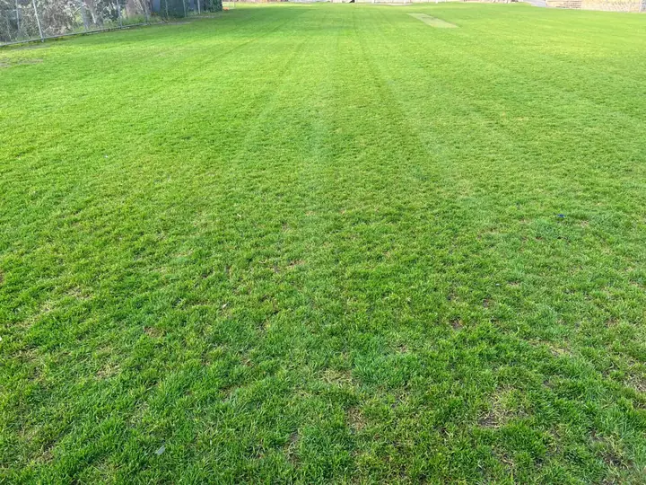
Frankston Lawn Mowing Gallery
Real lawns, real Frankston properties. Every photo below is work completed by Local Lawn Mowing & Maintenance on our regular mowing rounds — mown, edged and finished properly, every visit.
Lawns We Look After in Frankston
Lawn mowing is our core service — fortnightly from September to June, moving to every three to four weeks over winter. We also trim hedges and keep grounds tidy for our regular mowing customers.
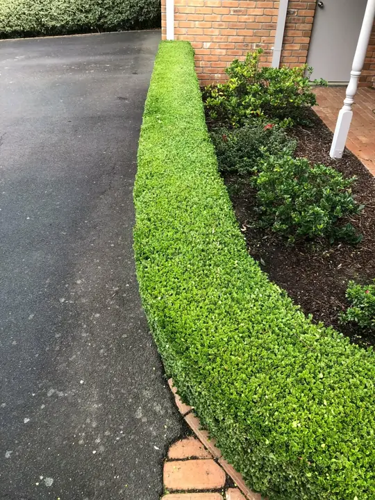
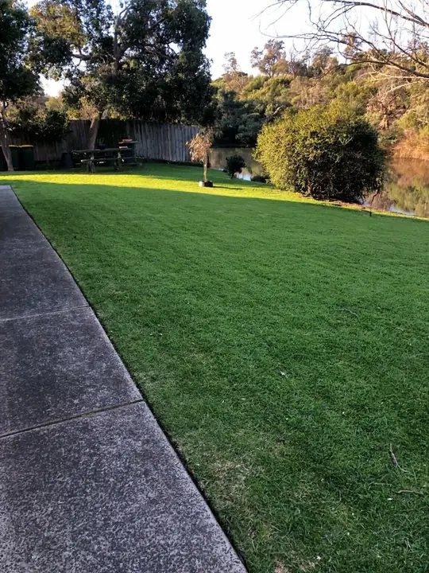
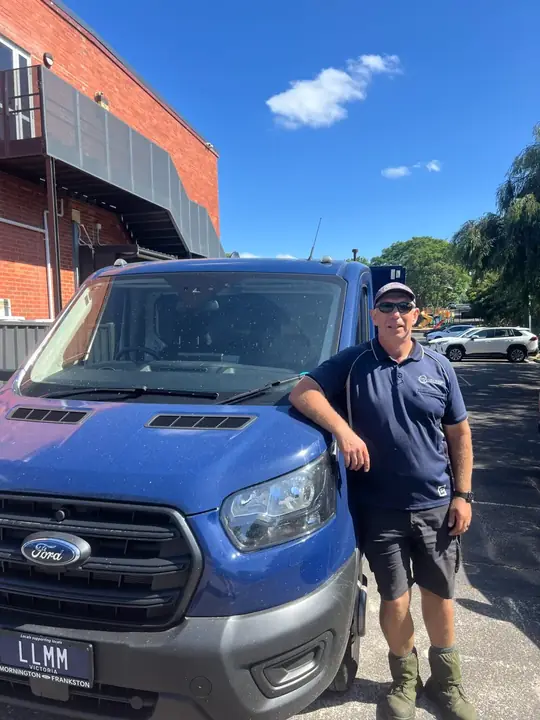
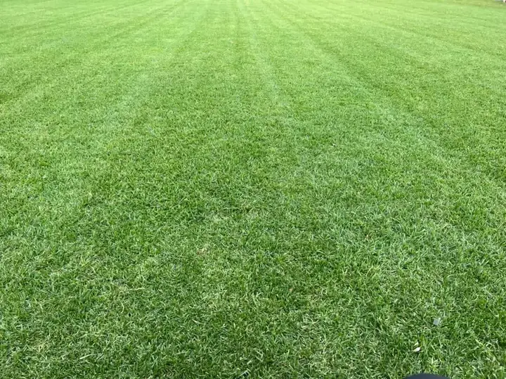
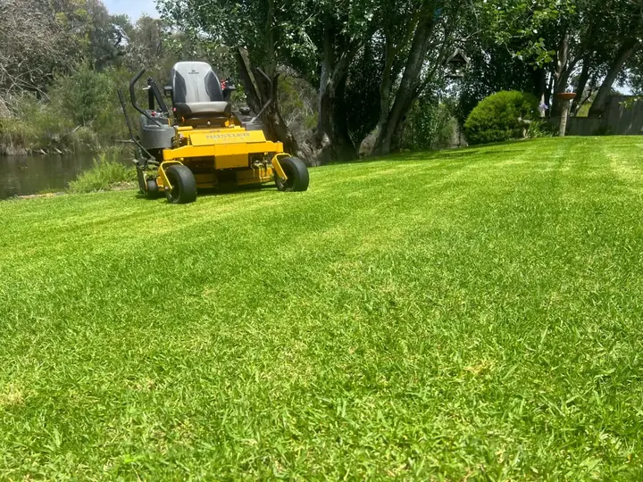
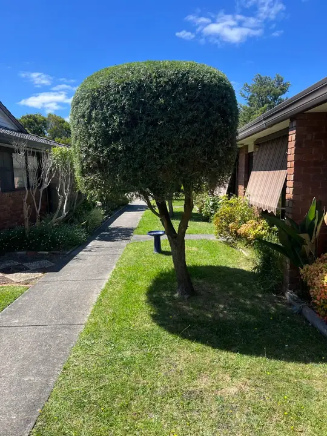
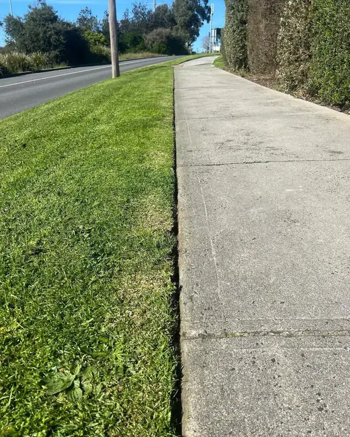
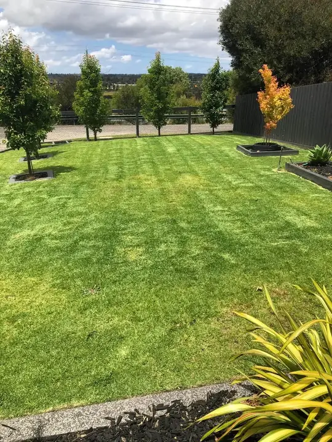
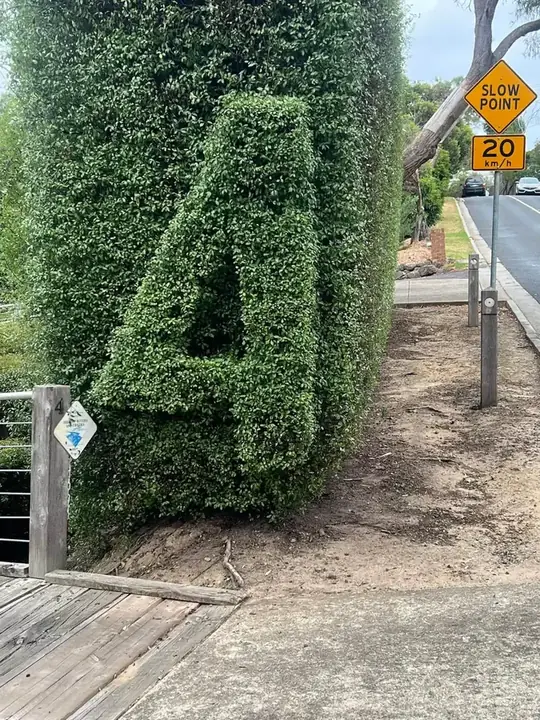
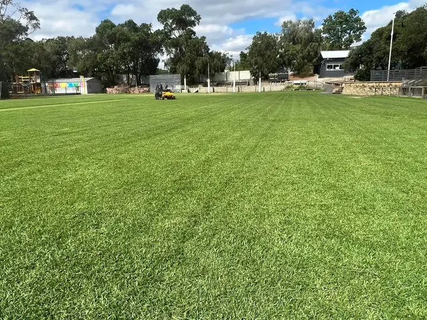
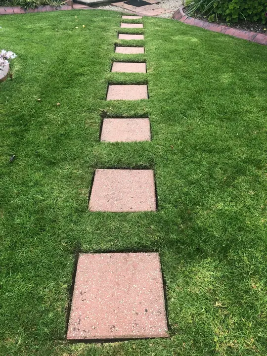
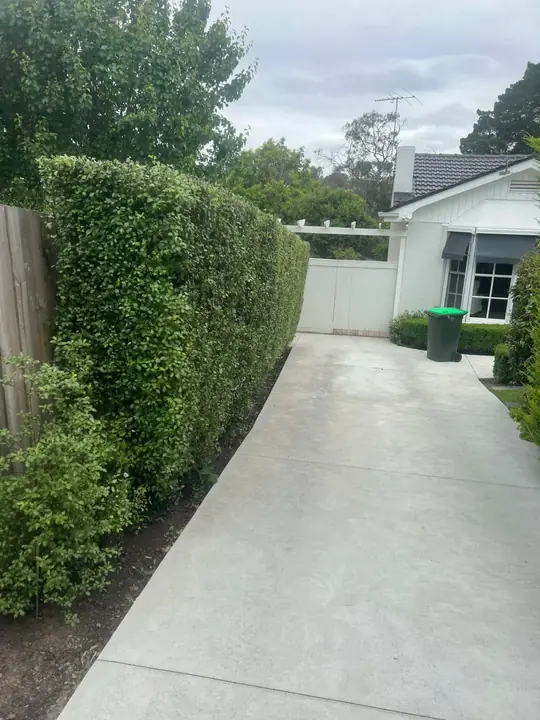
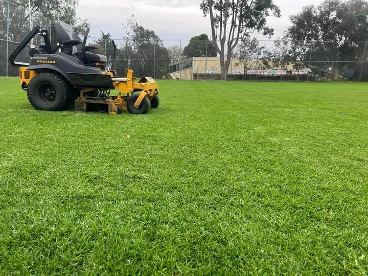
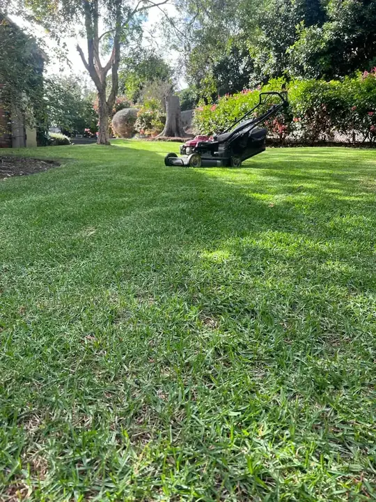
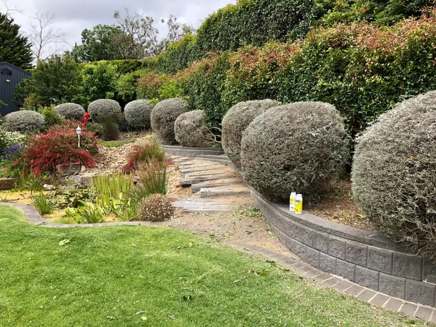
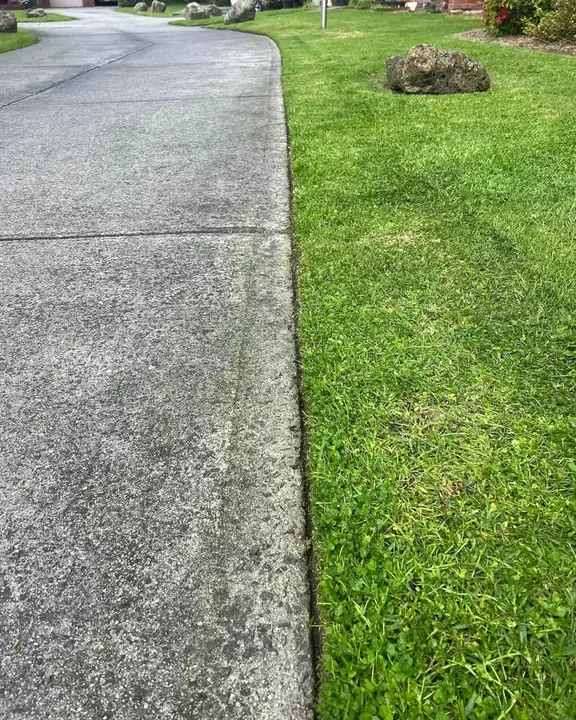
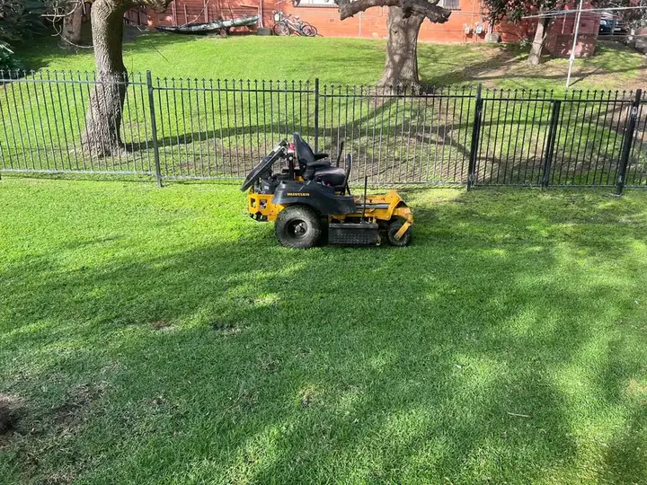
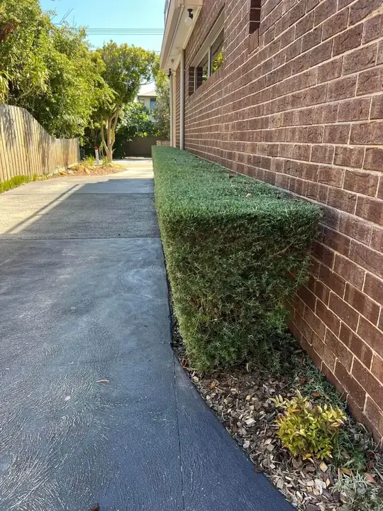
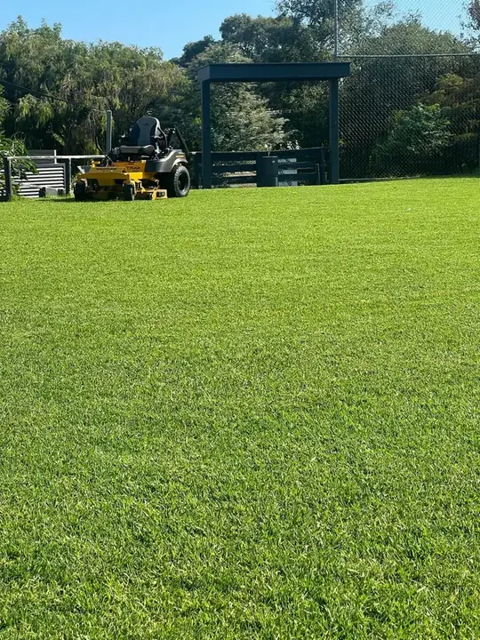
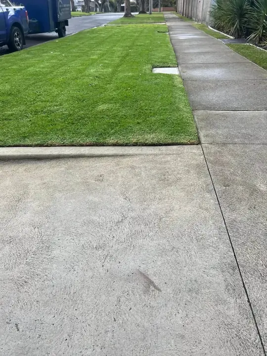
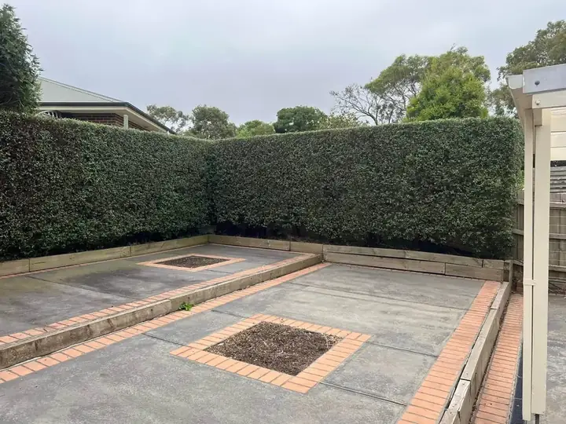
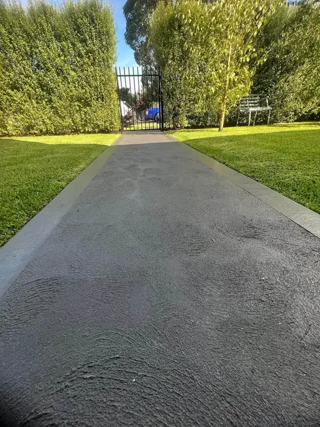
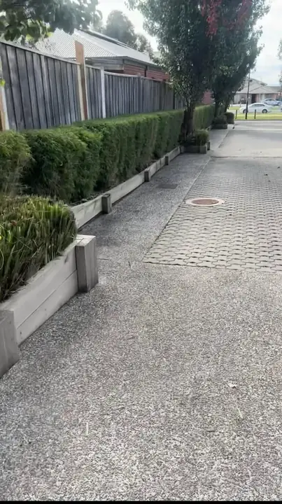
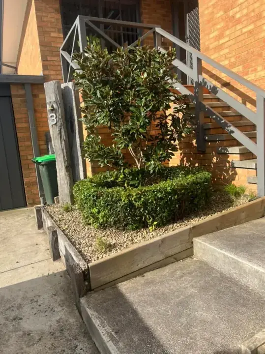
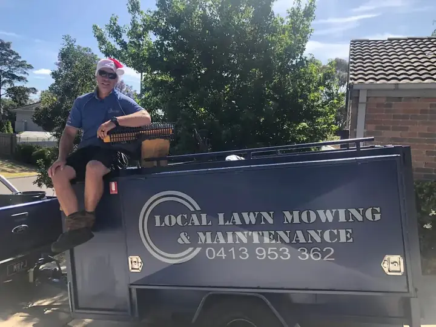
See the Difference a Regular Mow Makes
Drag the slider to see a real Frankston backyard — from long and overgrown to a crisp, evenly striped finish.
 Before
Before
 After
After
Want Your Lawn on This Page?
Book a regular mowing schedule in Frankston today — minimum service charge $55, no lock-in contracts.
Get My Free Quote